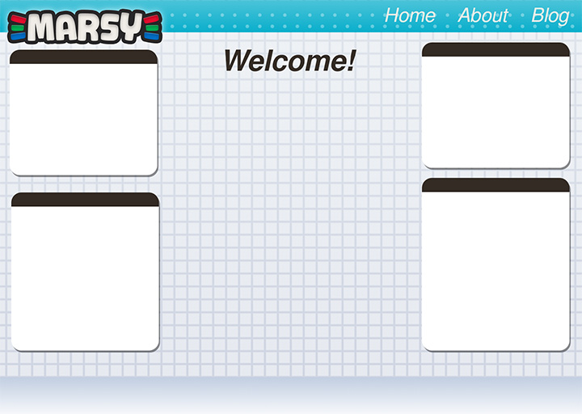

It's only just begun!
Welcome!
This is my very own website. I have had websites in the past, but this is my first foray with using a static site generator, Hugo in this case. In the past, all of my sites have been coded by hand and thus have not had much content on them. Using Hugo, I am hoping to produce more and more content on the web! It’s already been a very nice experience. It’s a bit hard in the beginning, but once you get the hang of all the cool features Hugo offers, development becomes super easy and rewarding!

This is a mockup of the website I created in Photoshop.
It still needs a lot of tweaking and such, but I think it will turn out well! I am working on it a little bit at a time.
I think it is important to have a personal website to speak my thoughts and to show off my projects. It also acts as a portfolio of sorts to showcase my work: past, present, and future. I like to think that it will be a sort of time capsule, and I will be able to look back at it in a few years and see the change that I have went through as a person. There is just something special about having your own website that you just don’t get with social media. I have a level of control and customization here that you just can’t get anywhere else.
It can also be a place to refer people to for further information about my projects and creations. A one stop shop for everything you need to know about what I do and who I am. I hope I can stick with it and keep it updated as I continue the journey of life! And I hope that whoever is reading this will share this journey with me through my ramblings.
I am looking forward to everything that is possible!
Until next time,